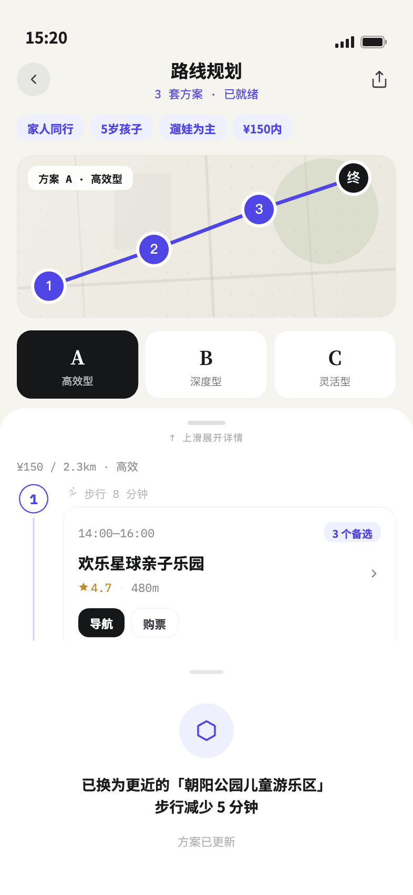
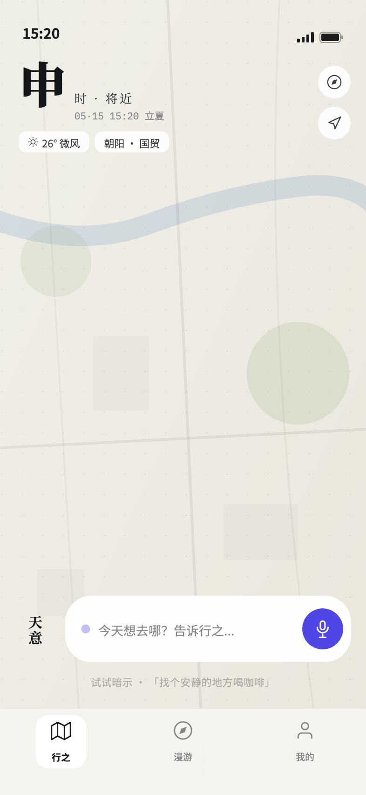
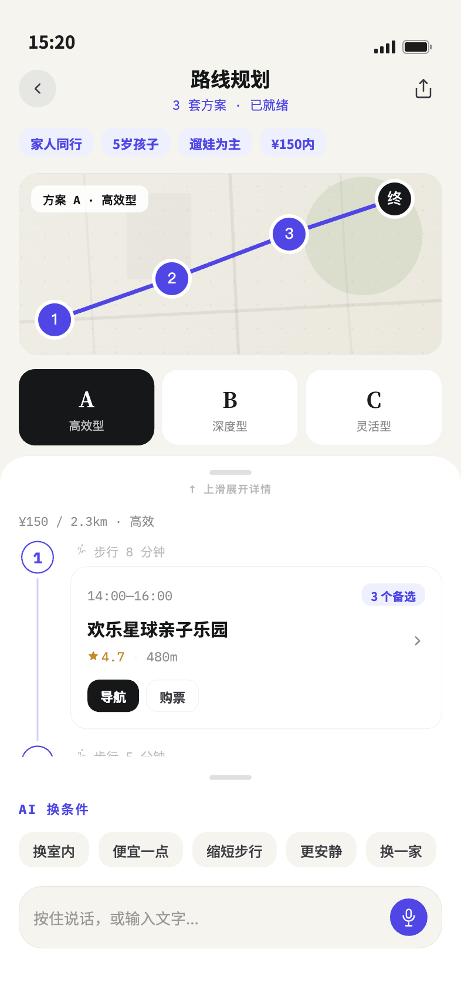
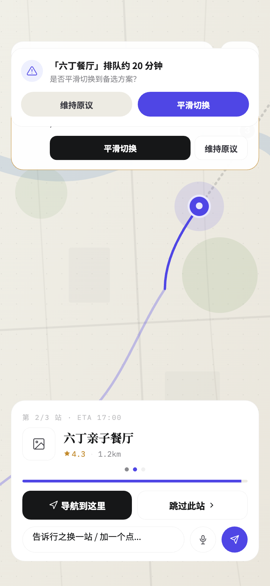
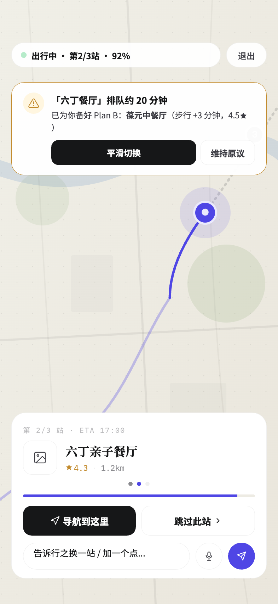
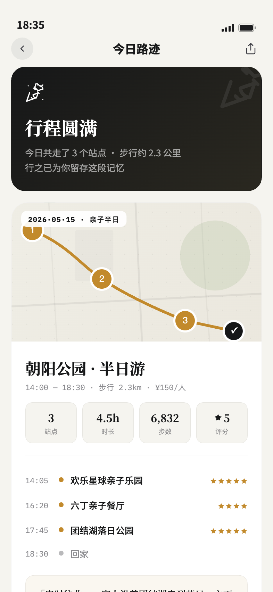
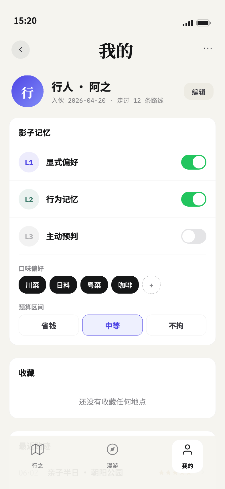

AI AGENT PRODUCT · PRODUCT LEAD
行之
用户不缺推荐，缺的是少做一次决定。行之把情绪、时间、位置与预算交给 AI，再引入紫微与五行等东方玄学元素，生成一条现在就能出发的 1–3 小时路线。

01 / 场景从“找地点”转向
从“找地点”转向
“替用户完成路线级决策”。
团队研究 5,056 条跨平台评论，将摩擦归纳为表达、比较、编排与变化四类。核心判断是：信息已经饱和，用户真正需要的是少做决定，同时保留修改权。
5,056评论研究，形成问题定义
A / B / C差异化路线与局部替换
L1–L3可见、可改、可关闭的记忆
02 / 推荐逻辑把东方玄学，
把东方玄学，
转译成灵感算法。
推荐设计引入紫微、五行等东方玄学元素，为路线提供带有仪式感的出发理由；同时结合位置、预算和可用时长等现实条件。玄学承担灵感与叙事的角色，路线仍需要符合实际出行需求。
03 / 产品系统把灵感变成一条，
把灵感变成一条，
真正可以出发的路线。
NLU/Intent、灵感规则、POI、Route 与 Narrative 五个模块各司其职。模型、地图或供给异常时，以正则、模板和 Mock 降级，保证核心 Demo 仍能跑通。
04 / 我的贡献定位、交互、PRD，
定位、交互、PRD，
直到可运行验证。
我负责产品定位、需求分析、AI 交互流程、PRD 与商业模式，并协调团队完成原型。已实现能力与未来设想分开呈现：真实交易接入、自动动态重规划和路线套票仍属于下一步。
05 / 体验证据不是一张推荐卡，
不是一张推荐卡，
而是一段会变化的旅程。
用七个关键画面呈现完整闭环：从模糊表达、方案生成与追问修改，到途中重规划、导航、回顾与记忆控制。





